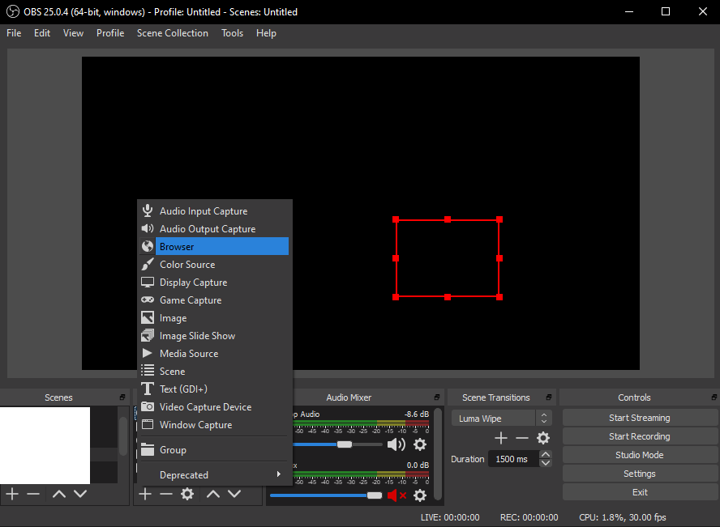
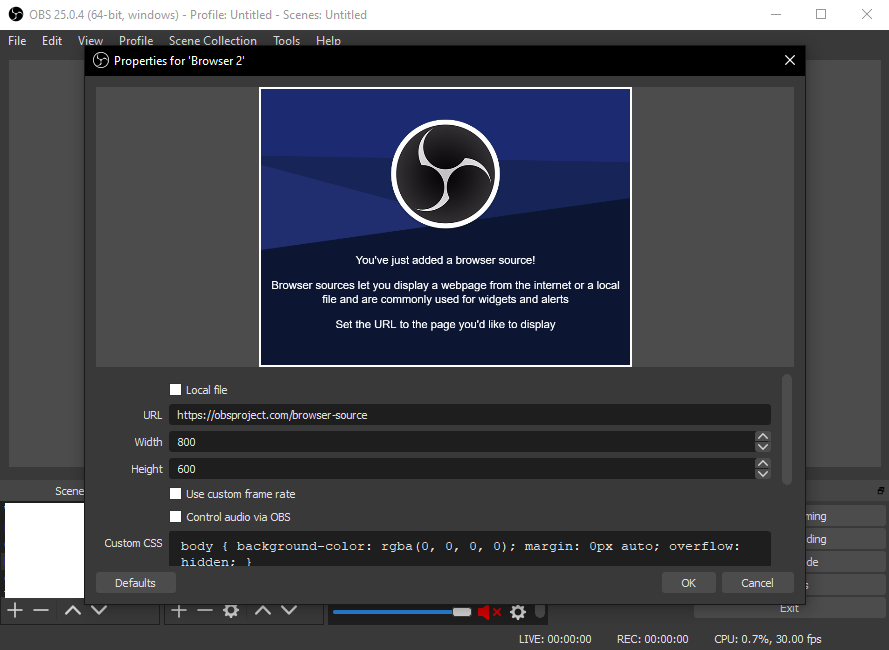

Note: toggle tts is not working here. Disable TTS directly by removing it from channel points.
Click the url to authorize the app. You'll see Twitch authorization page, where you can see the scope required for this app. Click authorize.
Open the SFX page on url above, and copy the url. Close the tab, and add the url to your OBS as a browser source.
 